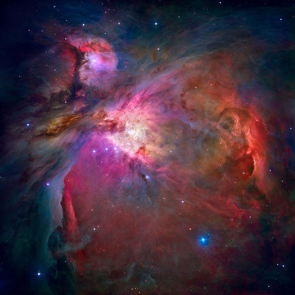

PARA OS AMANTES DO UNIVERSO!
OQUE SÃO AS NEBULOSAS
Nebulosas são nuvens formadas por poeira cósmica, hidrogênio e gases ionizados a partir de restos de estrelas que se desagregaram. Ao serem observadas, as nebulosas apresentam formatos irregulares semelhantes aos das nuvens, o que foi determinante para a escolha do nome desses corpos celestes, pois a palavra nebulosa provém de um termo em latim que significa nuvem. A poeira cósmica que compõe esses corpos celestes pode aglutinar-se pela ação gravitacional. Assim, a união dos materiais que formam a nebulosa pode dar origem à formação de uma estrela. Por esse motivo, as nebulosas são chamadas de berços de estrelas. O primeiro registro da observação de uma nuvem interestelar foi feito por Cláudio Ptolomeu por volta do ano de 150 d.C. Ptolomeu registrou em dois livros de sua coleção Almagesto a presença de cinco estrelas que apresentavam uma forma indefinida, como se fossem nuvens.

Nebulosas planetárias Ao serem observadas pela primeira vez, algumas nebulosas foram confundidas com planetas. Posteriormente, observou-se que esses objetos eram nuvens cósmicas que emitiam energia a partir da explosão de uma estrela central. As nebulosas planetárias representam o estágio final da vida de uma estrela.
Nebulosas escuras As nebulosas escuras praticamente impedem a passagem da luz e são observadas mediante o contraste adquirido em relação aos demais objetos celestes que as rodeiam. Esse tipo de nebulosa geralmente está associado a regiões de formação de estrelas.
